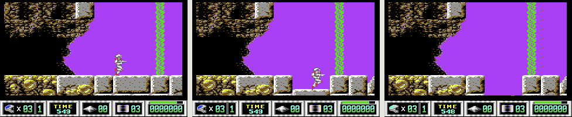

<meta charset="utf-8">
<meta name="viewport" content="width=device-width, initial-scale=1">
<title>Turrican II: The Final Fight</title>
<link rel="preconnect" href="https://fonts.googleapis.com">
<link rel="stylesheet" href="https://fonts.googleapis.com/css2?family=Lato:wght@400;700;900&family=IBM+Plex+Mono:wght@400;500&display=swap">
<style>
:root{
  --bg:#23262d; --paper:#e9e7e1; --surface:#ffffff; --surface-2:#f1efea; --line:#d5d3cc; --line-soft:#e0ded8;
  --ink:#2f3136; --ink-soft:#55585f; --ink-mute:#80838a;
  --link:#1f5fa8; --link-hover:#154480; --accent:#1f5fa8;
  --amber:#c25a00; --cyan:#1f5fa8; --coral:#d04a3a; --green:#2a8a4a; --violet:#4a5bd6; --hl:#fff0c2;
  --chip:#2f3136; --chip-ink:#ffffff;
  --c64blue:#40318d; --c64grey:#686868;
  --fd:'Lato',system-ui,sans-serif; --fb:'Lato',system-ui,sans-serif; --fm:'IBM Plex Mono',ui-monospace,Menlo,monospace;
  --col:1080px; --gx:68px; --fs:17px; --lh:1.6; --hw:900; --h1:46px; --h2:26px; --sy:48px; --pp:26px; --r:10px;
  --plate-shadow:0 1px 2px rgba(0,0,0,.05),0 4px 14px rgba(0,0,0,.05);
}
*{box-sizing:border-box}
html{background:var(--bg);min-height:100%}
body{background:var(--paper);color:var(--ink);font-family:var(--fb);font-size:var(--fs);line-height:var(--lh);max-width:var(--col);margin:0 auto;min-height:100vh;padding:0 0 4rem}
h1,h2,h3{font-weight:var(--hw);letter-spacing:-.01em;text-wrap:balance;color:var(--ink);margin:0}
.wrap{padding:0 var(--gx)}
.hero{padding:48px var(--gx) 8px;text-align:left}
.eyebrow{font-family:var(--fm);font-size:12px;letter-spacing:.08em;text-transform:uppercase;color:var(--ink-mute);margin:0 0 10px}
.hero h1{font-size:var(--h1);line-height:1.15;letter-spacing:-.02em;margin:0 0 14px}
.hero .sub{margin:0 0 .6em;color:var(--ink-soft)}
section{padding:var(--sy) 0 24px}
section:last-of-type{border-bottom:none}
.fig{font-family:var(--fm);font-size:12px;letter-spacing:.08em;text-transform:uppercase;color:var(--ink-mute);margin:0 0 10px}
h2.t{font-size:var(--h2);margin-bottom:12px}
.lede{color:var(--ink-soft);margin:0 0 30px}
.plate{background:var(--surface);border:1px solid var(--line);border-radius:var(--r);padding:var(--pp);box-shadow:var(--plate-shadow)}
.cap{font-size:14px;color:var(--ink-mute);margin-top:14px;line-height:1.55}
.cap b{color:var(--ink);font-weight:700}
code{font-family:var(--fm);font-size:.82em;background:var(--chip);color:var(--chip-ink);border-radius:4px;padding:2px 6px;overflow-wrap:break-word;-webkit-box-decoration-break:clone;box-decoration-break:clone}

</style>
<style>.t2-bar{display:flex;flex-wrap:wrap;gap:10px;align-items:center;margin:16px 0}.t2-scroll{overflow:auto;max-height:650px;background:#15171c;border-radius:8px;padding:12px}.t2-canvas{display:block;image-rendering:pixelated;max-width:none}.t2-shots{display:flex;gap:16px;flex-wrap:wrap}.t2-shots img{width:calc(50% - 8px);min-width:240px;image-rendering:pixelated}table{border-collapse:collapse;width:100%}td,th{text-align:left;border-bottom:1px solid var(--line);padding:7px}input[type=range]{width:220px}.t2-shot{display:block;width:100%;max-width:640px;image-rendering:pixelated;border-radius:6px;margin:8px 0 18px}.t2-shot.wide{max-width:100%}.t2-bar button.on{background:var(--btn-on-bg);color:var(--btn-on-ink);border-color:var(--btn-on-line)}.t2-quote{font-family:var(--fm);background:#15171c;color:#a9ff9f;padding:12px 16px;border-radius:8px;overflow:auto}#save-canvas,#farewell-canvas{max-width:100%;height:auto}.t2-note{font-size:14px;color:var(--ink-soft)}@media(max-width:650px){:root{--gx:20px;--h1:34px}.plate{padding:14px}.t2-shots img{width:100%}}</style><!-- tabs -->
<header class="hero"><p class="eyebrow">1991 · Rainbow Arts · Commodore 64</p><h1>Turrican II: The Final Fight</h1><p class="sub">A developer’s save of level 1-2 left on the disks, a farewell locked with the game’s own code, and a grudge against Smurfs.</p></header><main class="wrap"><section id="test-save" data-part="level-1-2"><p class="fig">01 · test save</p><h2 class="t">Secret: the disk carries a developer’s save of level 1-2, made in the middle of a game</h2><p>Level 1-2 opens on a stone bridge. As the player walks across, the bridge sinks and drops away in six pieces, and anyone too slow falls with it.</p><p>The disks hold two files that no level ever loads, named 23 and 61. Both are copies of level 1-2 as it sat in memory partway through a game. The bridge in them has already fallen, every one of its six pieces, and everything placed along the first stretch of the level has already been sent out. Someone played across the bridge, stopped the game, and saved the memory to disk.</p><div class="t2-bar"><button id="save-shipped" class="on">As the level loads</button><button id="save-saved">As the saved file holds it</button></div><div class="t2-scroll"><canvas class="t2-canvas" id="save-canvas"></canvas></div><p>The save also shows how it was made. Where ten blocks of the map should be, the file holds the words <code>SMON $C000</code>. SMON was a machine-code monitor, a program for reading and changing memory that German programmers used widely, and $C000 is where it usually ran. File 61 is a second, shorter save of the same moment. It was saved with the computer’s BASIC switched on, so its last 525 bytes are the start of BASIC itself, with its list of commands and messages such as <code>TOO MANY FILES</code>, where the map should continue.</p><p>Both files are on the original Rainbow Arts disks too, byte for byte, so they shipped in the box. A third unused file, ST, unpacks to part of the game’s engine from a different build, laid out at another address.</p></section><section id="farewell" data-part="ending"><p class="fig">02 · farewell</p><h2 class="t">Secret: the ending’s words are locked with the ending’s own program</h2><p>Near the end of the closing text, Manfred Trenz tells the player that Turrican II will be his last game for the Commodore 64. Nobody could read that line on the disk before finishing the game, because all of the ending’s text is scrambled.</p><p>The key is the ending’s own program. Each letter is mixed with one byte of the code that runs the ending, taken one after another, backwards through memory. Change any of those bytes, and the letter that depends on it changes too.</p><div class="plate"><canvas class="t2-canvas" id="farewell-canvas" width="600" height="172"></canvas><div class="t2-bar"><button id="farewell-stored">As stored</button><button id="farewell-read" class="on">As the game shows it</button><button id="farewell-patch">Change one byte of the program</button></div><p class="cap" id="farewell-cap"></p></div><p>The title’s credits and the opening story are scrambled as well, each with rolling keys of its own. Only the ending uses its own program as the key.</p></section><section id="smurfs"><p class="fig">03 · smurfs</p><h2 class="t">Secret: the original disk starts with a message about Smurfs</h2><p>The original disk begins with a tiny file named <code>##</code>, which starts the game’s loader. Its last bytes are a line of German that the game never shows:</p><pre class="t2-quote">ICH HASSE ALLE SCHLUEMPFE !!!</pre><p>It means “I hate all Smurfs”. Cracked copies replace this file with their own, so the line survives only on originals.</p></section></main><footer style="margin:16px 0 0;padding:22px var(--gx) 0;border-top:1px solid #e0ded8;font-family:'IBM Plex Mono',ui-monospace,Menlo,monospace;font-size:12px;color:#80838a"><a href="https://github.com/gamesexplained/gamesexplained" style="color:#1f5fa8;text-decoration:none">GitHub</a> · <a href="https://discord.gg/3V9GWyRDWV" style="color:#1f5fa8;text-decoration:none">Discord</a><br>© Games Explained contributors. Write-ups, facts and symbol maps are available under <a href="https://creativecommons.org/licenses/by-sa/4.0/" style="color:#1f5fa8;text-decoration:none">CC BY-SA 4.0</a>; code under <a href="https://opensource.org/licenses/MIT" style="color:#1f5fa8;text-decoration:none">MIT</a></footer>
<script id="t2-data" type="application/json">{"bridge":{"width":25,"height":10,"map":"d3XEdeEAAAAAAAAAAAAAAAAAAAAAAAACEleqtOeFAAAAAAAAAAAAAAAAAAAAAAAAZGTl5eUHAAAAAAAAAAAAAAAAAAAAAAAAAGRk5eXl1QAAAAAAAAAAAAAAAAAAAAAAAABCUlBgIIeX4QIS4ZJCUpKS4ZLhAhLhkkJSkuFEtKTktOGSkuGy4bKy4eGy4eHh4eHh4bLh5eXl5eXl5eXl5eXl5eXl5eXl5XKCIjLhkuXl5eXl5eXl5eXl5eXl5eXl5eXh4eHh4bLl5eXl5eXl5eXl5eXl5eXl5eXlcoJyguGS5eXl5eXl5eXl5eXl5eXl5eXl5XKC4SIyog==","strips":{"x":[24,36,48,52,60,68],"w":[8,4,4,4,4,8]},"tiles":"AAAAAAAAAAAAAAAAAAAAAAUGBAcMAzQsDxMUFTY3GxwBAgMECAkKCzQ5NBsKHR4fBQYEBwwkDQ4PExQVNDc1HCEHBRIICQoDDxAyIhkNNjcFBgQHNAoNDjcxFBWANzU2AQIDBQodHh8bICEiNzUcEAEEBQYMCg0RDxMUFTc0GzQKICEiASUDJAgJCgsBAgwiKAA9AgMtHA0iNzEUN4A3NWNkZWZtbG5rZ2ppaG9wcXJjZGVmc2xuc3RoaXRvcHFyY2RlZm1sbnNnaml0b3BxcmRlZmNsbmtzamlodHBxcm9jZGVmc2xua3RoaWhvcHFyZGVmY2xua3Nqr7OzcK2ArWRSVHVRSlN3UEtMAHFYAAB2VVZjeFdaWwBNTk8AAFlcZgAAAG4AAABxAAAAcjs7OwAAAGMAAABjAAAAZzs7O29GR0hJPj9AQUJDREWmp6d/Pj9AQUJDREU+P0BBQkNERV1eX2BCQ0RFPj9AQUJDREU+P0BBQkNERT4/QEGmp6d/AAAAAC8wMDAAEBscJwwcDgAAAAAAAAAALzAwMDsQGxwAAAAALzAwMAAQGxwnHR4frWVmrbFxcrSvY2Sus29wtGSJjo9si5CVaoyZlnBxs7GJjo9ji5CVrYyZlrOys3K0iY2Oj4uQkZSKkZuVjJOSlgCIjo+HkJGUipuXlYyak5aJjY6Ni5GRkIqRkJGMkpOSjo2Oj5GQkJWQkJGUk5OSlomNjo2LkJGbipuXmIyamZKOjY6PmZyXlZ2Qm5STk5qWAIiOjYeQkZCKm5eYjJqTko6Njo+ZnJCVnZCRlJOTkpaOjY6PmZyXlZuXnJSakpqWiY2OjYuXnJCKkZCRjJKTko6Njo+RkJCVkJuclZOakpaJjY6PipGRlYuQkZWLmZyUipGRlYqQkZWLm5eUipGRlYqRkZWKkJGVi5uXlIyampYAAAAAiY6Nj4qRm5SMk5qWAAAAAACJjo8Ai5CVAIyZlgAAAACJjo8Ai5CVAIyZlgAAAAAAAAAAAImPAACMlgAAxMfFxsXFx8TGxsXFGBgYGAQCAwgMCQoMERARMw4NNzKur7KzsK20rWppaHRwcXJvZGVmY7Bua3O0sWh0srNyb66vsrOwrbCttLFodLKzcm+ur2ZjsK1rc2ppaHRwcXJvAAAAAAAAAKAAAImNAKCLkQAAAAChAAAAjo8AAJGUoQAAooqRAACMkwAAAKIAAAAAm5WjAJKWAACjAAAAAAAAAK6vZmOwrWtztLFodLKzcm+OjY6NkZCRkJCRkJCTkpOTAHwdHiZuORyBNDUxgjOAgCIbSAAbNjctNDeAhYCAhIaAgICAu4CAgLa4q4AAALh+gICAgICAgICrrIC7fX59frcAAAC7twAAgLu3AICAu7cAAAAAAAAAAMDAwMAAAAAACgoOOAwKNjcMEXu7OjczgDk3M4A6M4CAe4AxOnsQNDa7GTUxgIATN4CArICAgICArLuAgDQ3gIA3M4CAM7uAgABhYgAAYWIAAGFiAABhYgCgoaChoqOio6ChoKGio6KjeXqEKXsQERw2FRlFNC0cKjOsuzN6gIB5gICArICAgIAbICEirDQzHIC7enqAgHuAHBscLBm7MxmrrLszrICAqzk1NjM3DBx6ExsfrBk0M4CAuzM4gKx5MoCAuzGAgIB6OTc1Njo3eToigHt6gICAgDd6uzOsq4CsgICAgICAgIAAAAAAAAAAAAAAJxIAJwEdAAAAJycHBQYJDRAPHh84DSYdHiAlICEiJiI5ESwQETcrCDGEAAMyNgAAKwgAAAAAISI3NCwxMzcMNzeAN4CAgDesgICWhHl6FTQxNDYcGTU2KAAAODcOPIQ0N0V5NDMtu3o1HIC7ESmAu7scgDccLTo0LCocMS0ANjQqAEUqAACAN4A3hHl6GzQxNBAcGTUNuLuAgAC4u4AAuoCAALq7gAC4gIAAuoCAALq7gLm7gICAu7YAgLYAALu3AAC7tgAAgLUAALu3AACAu7cAgIC7t4CAgICAgICAgICAgICAgIAAAAAAJSkCLSupRIYAqgAAAAAAACYdAi0rM0SGAAAAAAEFBwIrCQoLACupggAAqgAeFC0ADA2pABWpqgCqhgAAAAAAAAAAAAAAAAAAOzs7OwAAoKEAAKKjoKGgoaKjoqOgoQAAoqMAAKChoKGio6KjJKSkpDUpFqUxNzgWNzUzEaSkpKSlpaWlpaWlpaWlpaWkpCcHpQkNDhcTFBUJHBscpaWlpaWlpaWlpaWlpaWlpQAAAAAAAAAAAAAAADsAAAAAAAAAAAAAAAAAAAAAADs7gLs3NIC7ejqArDd6rLt7NAsKDDQBEQ0iEhUMESUsETcAAAAAMDAwLjU2RQAbMzwAAAAAAAAAAAAwMDAuMjMcQYCAu7aAgLYAgLu3AIC7tgAAuLuAALq7gAC6rIAAuayArIC2AIC7twCAu7cAgIC2AMQYGBjFiY6PxouQlceMmZYYGBjGiY6PxIuQlcWMmZbHNDI1Nqs0Mxysu3l6gIB7u2SvsrNsrbStamlodHBxcm8iH3k0KSBEOiwiNHosEDU0iY2OjYuRkZCKm5yYjBUBBo6Njo+RkJCVJh0eICUgISKAu7uAgICAu4CAgICAgICsgKy7u4C7rICArICAgICAgIC7u4CsgICsgICAgICAgICAgICAgICAu4CsMTp7EDQ2OTU0NDozq4AzuzE6NBA0NgE3MRpEe4CAgICAgICAgICAgICAFAMIEQEVDDQlLBE3gICAgKyAgIC2fquAAAC4q2NkUlRzUUpTdFBLTG9xWABVVmNmV1pbc01OT3QAWVxyY2YAAHNuAAB0cQAAb3I7OwAAY2YAAGNzAABndDs7b3LEx8XGxcXHxMbGxcXHxMTHALi7gAC4rIAAALisAAAAuICAtgCArLYAu7YAALYAAAAAAAC5AAC5uwAAubsAuayAtwAAAIC3AACAu7cAgLu2AHo3ei03eRkqNIWGAAAAAAAoAAAACHobADE3KgA3ezYbAAAnBwAdDQ4AKxQVCRwbHDSAgIA3ejeAMTd7gDd7NgwABy0iJhNENAEVMSwAODQsAQYEBwADNCwAALgVAAAAKysJCi0AuCK2AAB7hgAAqgABEBEVKwkZegArqSsAAKoAHhktAAw3tgAVhQAAqoYAACcmBwWBJBsxgjN5hAAAAAAmJxkoGQ43hUSCe4YAAAAAGBgYGKWlpaWlpaWlpaWlpcPDw8PFxcfExsbFxcfExMcsBxUcJBNENBEVMSwsODQsgIR5B4Q0EQ41ExQVCRwbHAoNEQcMCzQsGxMUFTY3GxyAgICAgICAu4CAgLuAgLu2JgIkAyQRG3ozM3mEgICAgCYQGZQZDjc2RDN7gICAgIABEBEVRAkZeoBENzOAgICAHhktgHo3E4AVM4CAM3uAgICAgICsgICArKusgLuArLuAgICAgKy7gKy7q4CAgICANjeAgDc1ezeEeTkxNzQzNICAgIC2uKustwC4gIC3ubu7gICsgLa4gLUAuKy7tbqAuzQ1MjJ6ejozNzh6qzU5MyQWpaU1KRalMTI4pTc1MxalpRcHpRcJDhcTFBUJHBscgKyAt4CArLaAgIC1gIC7tiMaIxqAgICAgLuAu31+fX46NCw5HDEtMjY0Oas1N6uAMzIxM6szInuAgDiAgIAzq4CAgIAsMjOAeRE4NA4xGzYaIxoAgKy2ALu2AAC2AAAAAAAAAAAAAAAAuRojubuAgAAAAAAAAAAAGiO3AIC7gLUHCjeAHTI0gAgKODcUFTqAgICAgICAgIB7Cg2AeTE1Mjo0MjM1MTS7NAozN3kxNTeAgDk0gDN7ejU2Mjk0MXuANAoMOgERNHsmFQw0eiwRN4CAegiAgDM1gIA1e4CAeQyAgEQIgIAzNYCAhHuAgDQMgICAgICAgLsQMjcKNjQ1MoCAgICAgICAOoCANDU4MTS7ejUpgDURHKw3GUW7exwqgIBEQYC7MzWAN3pYgKw0QTUkNLusMzGsMXoxND8QNDc=","font":"AAAAAAAAAABpln5/9dbadv99Vd6mufnl91Ve9vbWWlr/9dbaV6Wppnn+VdZqpqmn/3dddvbWmWn1nmpl31elqa6rm2t7b77pn799dZaapmqba256ufvq5qpWff/91lqq2+u/q5tub77tq5tWW6665aX5urn5+bqun3999fX1VXr7vm+b26fq+qWW1Zqba676f//11mambm+va1ubq2+v/5+9d/3Waaefb5tqZrm5ueb///9/v3+/r/////3+/f76qlW0VVK6J/2X6++/b27rrwiXeem7////5bn6+r6+v/qaa6//uunluV9/fff91VZq1v/VZqlqqqX7rm5rW5tbW6qqamlZlqXql2edffbWWaeam2uba2+uucyRLL7v/v+/mp2+mmnnnaZrf723uZqebV1bZ2efnZ6tABEGLh1/troAQJCk+b5vvmhaqLr65aj87dZooOCAAACeKicJKggCAL3p7r7++vqlhOWWWu3d6bT/q3D22KBggP/qDZ8nCgkC/2mXfea5Zqr715vv/5nW62+bluvWab7/r9v/75vm////75ZWa6++7+qZlqv+6fr/pllWW2qb7rv//79v7////yu62+aqlqsua5bmm9ue9m/7rlt26pur/wAgMRua3+v/AABo0PCY2L4AAAkHDSYtlnl5OR4eHRUGnZ6dZ2ebefaWWmutvW5vW4CA0OCkdHhoAQcHHx0ddnb62mmZdra2nVual+fr/vn1mdnZmFRkYNAABAUWGhp+ewh5rbvuv+u2AACB4elOK+0AAABgoOSg0A888cV5nmfZZlWlZlpvfVy84ICAAAAAADYOAwMAAAAAtdVVVVbZ2XVe1ndWl2ZaVlN8QZXl2tnpJRaWWWliignW19XV1mmftVZmmnbeVpZaa3tbq5tra5mdtZ6lqr7XV3bWalaepmpa6fr+1Vntdda4qPBwcOCw4DU6Cw8NDQ4GnWlaWmuttr/aurbujWpeW5v6W1tbW1euL3z6XKunOAr/mmddddppqv+m2XVdp2mqoBi57rqZqKAmXWYdZl0mXfvm++b75vvmf9XYzcTp1/3qdl526pZWVn/V1dZp1/3V/VpmttZWWK3W1tbWamr91dXVVeWqqvRcWqZd9qqqVf/V1qdaq6tVb9Vqai/13frmVqmq/+XW3tnWaml/vtZWVrraqlb23dqWZan63tfVampWVlaVVlZaqvXVV/WW6WqmZpJKKhZuvaoAquyeVmqmXmaUVliqqn3WwMWd95+fmJoDo1pr9vqmpp+dZpuZG6ch9laY5GbS6oj/7vu++aaf/tnn6p+b/+vv+7fvm+9vv78AAQcHHRV5df/////5z4I8////vu84gzagGLnuupmooP//////////Fy5uW2Ymta5fdy4vSx4HAAAAQFCEcOS1/////v/uu9266fTo+OiwiNDw4MDQQEAAAw0HDQc99d4ADzU22ep3/V9/9/319dbd9d393fnW9fX13fX59d32+fbd9t322Wpq////fVVVVVX//3XZVlVVVfX9dd5aZppmVVVVVVlVVVVVWVVVVVWVVVVVZqq+////VVVaqWa7//+rb69/r7+7r5tua2+va5trm2+bn3///vhVVVZbbrn1pVZrvumVVVVVdXluW2++6eVvfrq6vv///1VVlWVuW1ZbVmltue6bVlXltXV1pdXVZQAfd9vdK90rAGR5fll+WX4ACiollZ1dlQCg+Lgubn87pbq+r7YpLgu3t+ebXmy44JT7Z/////////////////8vfPpcq6c4Cv+aZ1112mmq/6bZdV2naapvr59/r798/Ly4eHBwMDAg+/+///+/////////7////99v/6tbZm/rf5unm3/rq6uVamprvmlWaqv+/1V6a2dur/umW///qlWrq6vqq6uv/1pqqVrrfr/7amv5r/39qrXgwODg8Ojw+Pzd+ez0kMRgIMTwtPz57c+7e28/HgsTCQgTDR43b3szCwMLCw8rDy////+//v//7z8Zefbt+X4f5/n/vn//nngrPnt7e30+H/heb25ePnyYav+b370gAAAAav+b370gAAAAav+b370gAAAAAFWq5i3tvqve9rWddz3Oqnta7627+Z22l/Wd7V/6t7mv6W25nwAAAAAAAAAAAAAAAAAAAAAAAAAAAAAAAAAAAAAAAAAAAAAAAAAAAAAAAAAAAAAAAAAAAAAAAAAAAAAAAAAAAAAAAAAAAAAAAAAAAAAAAAAAAAAAAAAAAAAAAAAAAAAAAAAAAAAAAAAAAAAAAAAAAAAAAAAAAAAAAAAAAAAAAAAAAAAAAAAAAAAAAAAAAAAAAAAAAAAAAAAAAAAAAAAAAAAAAAAAAAAAACi+dVllnigAJZ9///9/nyVV////////VVj2/f///fZYACB4//94IAAABB7//x4EAAAAAAD4fwAAAAAAAB/+AAAAAH/4AAAAAAAA/h8AAAAA8Ph+DwAAAAAAAAAA8Ph+DwAAAAAPH37wDx9+8AAAAAAAAAAAD3748A9++PAAAAAA8H4fDwAAAAAAAAAA8H4fD/b0/dj2/PHanx9/J58/T6c8fv////9+PFY6f/dt/nc6XCrFZ6XYJTYAAx8/f3///wDA+Pz+/v////9/fz8fAwD///7+/PjAAAAZO319PNvnAMzevr4+jeHHo3l9Pj0RAO/v3i7U+PD4ATtZcRQACsGAzp4GkACJ58ehACRwWTEAY8CGLwZAoOA=","colours":"AA8PDw8PDw8IDwgPCAgICwgIDwgPCA4OAQgICAgPDwgIDwgIDw8PDwgICA8ICAkJCQgICAgICAgICAgFCAkJDwgICQ8ICAkICAgLCAgLCwgLCwsLCAsLCwgLCwgICwsLDQkICwsLCwsLCwsLCwsLCwgLCAsLCQkJCQgICAkICA0ACAgICAgICQkJCQkJCQkJCwsICAgICAgICAgICAgBAQkICAgGDgsLCwgICAgICAgICAgICAgICAgICAgFBQUFCAgIAQEBAQEBAQEBAQEBAQEBAQEBAQEBAQEBAQEJCQkJAQEBAQEBAQEBAQEBAQEHBwEHAgEBAQEHBwcHAgICAg==","palette":[4,12,9],"defs":188},"farewell":{"rows":[{"address":64256,"enc":"UqhwUQz3+qf8wH8VjcqBxlQ=","key":"AKnj+J23qQSi0BuO6NAVjv8="},{"address":64273,"enc":"tGeMBtrf54u67q3nPXI=","key":"ovLQyuDm3ub50Mjfkd0="},{"address":64287,"enc":"pEm/SdKVHKL7zuhyo3U=","key":"sQSiAKDghfCp34UAqd4="},{"address":64301,"enc":"ycWs2ylSCYT0J7X55nbcl/wFEL1pD9LuraCB","key":"hZCp3YVsqfHQoMDI20iZBci9qgdIufHQyOMA"}],"fonts":["AAAAAAAAAAA4fOb+5ubmAPzm5vzm5v4AfObg4ODmfAD47Obm5uz4AP7g4Pjg4P4A/uDg+ODg4AB85uDu5uZ8AObm5v7m5uYAfDg4ODg4fAA+HBwcHOx4AObs+PD47OYA4ODg4ODg/gDG7v7WxsbGAOb2/v7u5uYAfObm5ubmfAD85ub84ODgAHzm5ubmfB4A/Obm/Pjs5gB85uB8DuZ8AP44ODg4ODgA5ubm5ubmfADm5ubm5nw4AMbGxtb+7sYA5uZ8OHzm5gDm5uZ8ODg4AP4OHDhw4P4AfHBwcHBwfAAOGTh+OHH+AD4ODg4ODj4AADh8/jg4ODgAMHD+/nAwAAAAAAAAAAAAODg4OAAAOABmZmYAAAAAAGZm/2b/ZmYAOH7gfA78OADm7hw4cO7OAHzmfHjO7H4AHDhwAAAAAAAcOHBwcDgcADgcDg4OHDgAAGY8GDxmAAAAGBh+GBgAAAAAAAAAODhwAAAAfgAAAAAAAAAAADg4AAAGDhw4cOAAfObu9ubmfAA4OHg4ODj+AHzmDhxw4P4AfOYOPA7mfAAOHj7m/g4OAP7g/A4O5nwAfObg/ObmfAD+5hw4ODg4AHzm5nzm5nwAfObmfg7mfAAAADgAADgAAAAAOAAAODhwHjhw4HA4HgAAAH4AfgAAAHgcDgcOHHgAfOYOHDgAOAD//////////wAAfAZ+5n4A4OD85ubm/AAAAHzm4OZ8AAYGfubm5n4AAAB85v7gfAAeOHw4ODg4AAAAfObmfgZ84OD85ubm5gA4AHg4ODh8ABwAHBwcHBx44ODu/Pj87gB4ODg4ODh8AAAA/NbW1tYAAAD85ubm5gAAAHzm5uZ8AAAA/Obm/ODgAAB+5uZ+BgYAAPjs4ODgAAAAfOB8BnwAODh8ODg4HAAAAObm5uZ+AAAA5ubmfDgAAADG1tb+bAAAAOZ8OHzmAAAA5ubmfhjwAAD+HDhw/gAAIgCIACIAiFWqqqr/VQCqvpYoKL5VAKr/1dra2moAqv9VqqqqqgCq/VaoqKiqAKra2tra2tra2qrS2Nra2NKqp6enp6enp6eqhyenpyeHqqoAVf+qqqpVqgBVvigolr6qAGra2trV/6oAqqqqqlX/qgCqqKioVv3/1dra2tra2P9Xp6enp6cn2Nra2tra1f8np6enp6dX/w==","PEKdsbGdQjx85ub+5ubm5vzm5vzm5ub8fObg4ODg5nz85ubm5ubm/P7m4Pjg4Ob+/ubg+ODg4OB85uDg7ubmfObm5v7m5ubm/jg4ODg4OP4GBgYG5ubmfObs+PD47Obm4ODg4ODg5v7G7v7WxsbGxub29v7+7u7mfObm5ubm5nz85ub84ODg4Hzm5ubm5vxu/Obm/Pjs5uZ85uB8BubmfP66ODg4ODg45ubm5ubm5nzm5ubm5nw4EMbGxsbW/u7G5uZ8ODh85ubm5uZ+BubmfP7GDBgwYMb+fHBwcHBwcHwIDP7//gwIAD4ODg4ODg4+EDh8/jg4ODgQMH//fzAQAAAAAAAAAAAAODg4ODg4ADhmZmYAAAAAAGZm/2Zm/2ZmGD5gPAYGfBji5gwYMGDOjnjMzHvezM5/HDhwAAAAAAAcOHBwcHA4HDgcDg4ODhw4AGY8/zxmAAAAGBh+GBgAAAAAAAAAHBw4AAAAfgAAAAAAAAAAAAA4OAMHDhw4cODAfObu/vbm5nw4eDg4ODg4fHzmBjxw4Ob+fOYGPAYG5nwcPHzszP4MDP7m4PwGBuZ8fObg/Obm5nz+7gwYODg4OHzm5nzm5uZ8fObmfgYG5nwAADgAADgAAAAAOAAAODhwDhgwYGAwGA4AAH4AfgAAAHAYDAYGDBhwfOYGHDg4ADg="],"patch":{"address":31969,"value":234,"row":2,"index":6,"glyph":"SEhISEhERE0=","glyphAddress":39012}}}</script><script src="../../lib/c64.js"></script><script>
const $=s=>document.getElementById(s),D=JSON.parse($('t2-data').textContent),unpack=s=>Uint8Array.from(atob(s),c=>c.charCodeAt(0)),pal=C64.PAL;
// The level 1-2 bridge, as the level loads and as the saved files hold it.
const B=D.bridge,bTiles=unpack(B.tiles),bFont=unpack(B.font),bCol=unpack(B.colours),loaded=unpack(B.map);
function savedMap(){const m=loaded.slice();for(let s=0;s<6;s++){const c0=B.strips.x[s]>>2,n=B.strips.w[s]>>2;for(let r=4;r<6;r++)for(let c=c0;c<c0+n;c++)m[r*B.width+c]=0;}return m;}
function drawBridge(m){const cv=$('save-canvas'),g=cv.getContext('2d');cv.width=B.width*32;cv.height=B.height*32;g.fillStyle=pal[B.palette[0]&15];g.fillRect(0,0,cv.width,cv.height);
for(let i=0;i<m.length;i++){const k=(m[i]<<4&240)|(m[i]>>4);if(k>=B.defs)continue;const bx=i%B.width*32,by=Math.floor(i/B.width)*32;
for(let y=0;y<4;y++)for(let x=0;x<4;x++){const ch=bTiles[k*16+y*4+x],v=bCol[ch];if(v&8)C64.drawGlyphMC(g,bFont,ch,bx+x*8,by+y*8,1,[pal[B.palette[0]&15],pal[B.palette[1]&15],pal[B.palette[2]&15],pal[v&7]]);else C64.drawGlyph(g,bFont,ch,bx+x*8,by+y*8,1,pal[v&7],pal[B.palette[0]&15]);}}}
function bridge(saved){$('save-shipped').classList.toggle('on',!saved);$('save-saved').classList.toggle('on',saved);drawBridge(saved?savedMap():loaded);}
$('save-shipped').onclick=()=>bridge(false);$('save-saved').onclick=()=>bridge(true);bridge(false);
// The farewell: each byte is mixed with one byte of the ending's program, read backwards.
const F=D.farewell,fonts=F.fonts.map(unpack),patchGlyph=unpack(F.patch.glyph);let fmode='read',patched=false;
function decodeRow(r,ri){const enc=unpack(r.enc),key=unpack(r.key);if(ri===F.patch.row&&patched)key[F.patch.index]=F.patch.value;return Array.from(enc,(e,i)=>(((e^0x86)+key[i]-0xD3)&255));}
function drawFarewell(){const cv=$('farewell-canvas'),g=cv.getContext('2d');g.fillStyle=pal[12];g.fillRect(0,0,cv.width,cv.height);let font=0;
F.rows.forEach((r,ri)=>{const y=14+ri*40;if(fmode==='stored'){unpack(r.enc).forEach((e,i)=>C64.drawGlyph(g,fonts[1],e&63,6+i*20,y+4,2,pal[15]));return;}
const b=decodeRow(r,ri),clean=decodeRow(r,-1),colour=pal[b[0]&15],shift=b[1]&7;let col=b[2];
for(let i=3;i<b.length&&col<24;i++){const c=b[i];if(c===0xFE)break;if(c===0xFB){font=0;continue;}if(c===0xFC){font=1;continue;}
const k=c<0x60?c&63:c-0x20,x=col*24+shift*3+(cv.width-576)/2;if(c!==clean[i])C64.drawGlyph(g,patchGlyph,0,x,y,3,'#ff3b30');else C64.drawGlyph(g,fonts[font],k,x,y,3,colour);col++;}});
$('farewell-cap').textContent=fmode==='stored'?'The same four rows as the disk holds them, each byte drawn as a letter.':(patched?'One instruction of the ending, the one that sets where a font is copied to, turned into NOP, the instruction that does nothing. The L of LAST becomes a scrap of other data.':'Four rows near the end of the closing text, drawn on grey so that the black row shows.');}
$('farewell-stored').onclick=()=>{fmode='stored';patched=false;sync();};$('farewell-read').onclick=()=>{fmode='read';patched=false;sync();};$('farewell-patch').onclick=()=>{fmode='read';patched=true;sync();};
function sync(){$('farewell-stored').classList.toggle('on',fmode==='stored');$('farewell-read').classList.toggle('on',fmode==='read'&&!patched);$('farewell-patch').classList.toggle('on',patched);drawFarewell();}sync();
</script>
